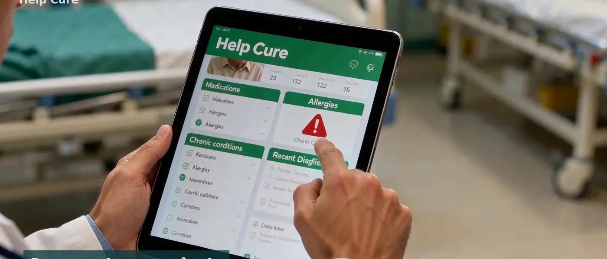
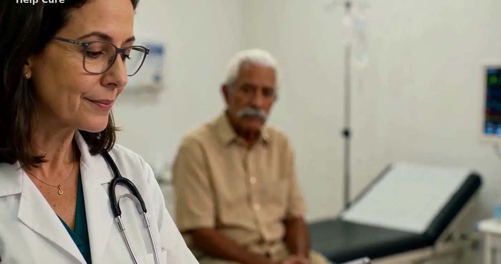

Soluções / Hospital e clínica
O paciente chega com a história pronta.
Da recepção à alta: a pulseira identifica o paciente, os sinais entram direto no sistema e a família acompanha a internação.
Um dia no hospital com o Help Cure.
Menos papel, menos redigitação, mais tempo com o paciente.
Recepção
A leitura da pulseira ou do cartão abre o resumo do paciente: medicamentos, alergias e últimos diagnósticos.
Triagem
Pressão, temperatura e oxigenação entram no sistema na hora, sem papel.
Internação
O posto de enfermagem vê medicamentos e medições de cada leito; a enfermagem registra doses pelo tablet.
Alta e continuidade
O paciente vai para casa monitorado, e o médico recebe a indicação de estabilidade.
O que muda na rotina da equipe.
- Resumo de emergência — Histórico essencial na tela em segundos, mesmo quando o paciente não pode falar.
- Painel do posto — Sinais e medicamentos de todos os leitos do andar, com alertas por prioridade.
- Família informada — Quem cuida recebe atualizações da internação, sem ligar para o hospital.
- Visita médica com dados — O médico vê a evolução comparada com o padrão do próprio paciente.
- Integração — API para enviar o prontuário ao sistema do hospital e ao prontuário único público.
- Laudos assinados — Assinatura digital com carimbo do tempo nos documentos clínicos.



Para quem atende.
Hospitais públicos e privados
Pronto-socorro, internação e alta com o mesmo histórico.
Clínicas e consultórios
O paciente chega com os dados entre uma consulta e outra.
Equipes de enfermagem
Registro de doses e sinais no tablet, sem redigitar.
Tudo ligado ao mesmo histórico.

Paciente e família
App, lembretes de remédio e resumo de emergência no bolso.
Saiba mais →
Farmácia
Receita, dispensação e adesão ao tratamento no mesmo histórico.
Saiba mais →
Home care
O cuidado continua em casa depois da alta.
Saiba mais →
Célula de atendimento
Sala de 9 m² com triagem e teleconsulta, onde as pessoas estão.
Saiba mais →
Unidade móvel
Triagem e duas cabines de teleconsulta sobre rodas.
Saiba mais →